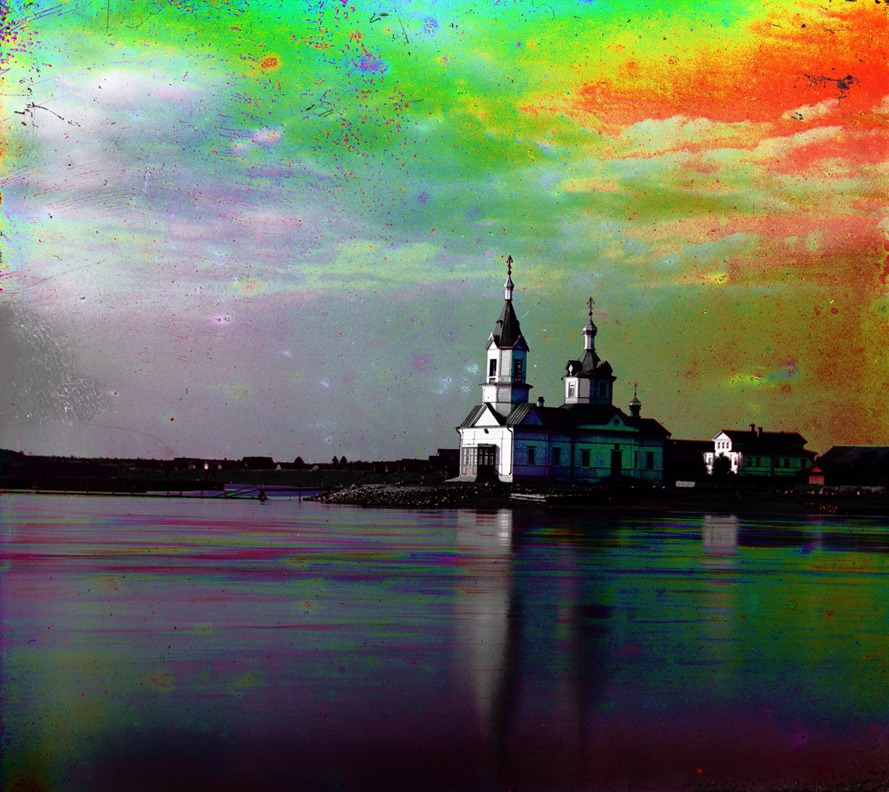
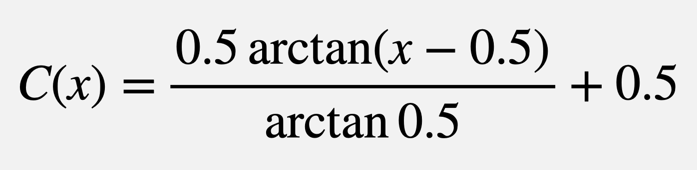
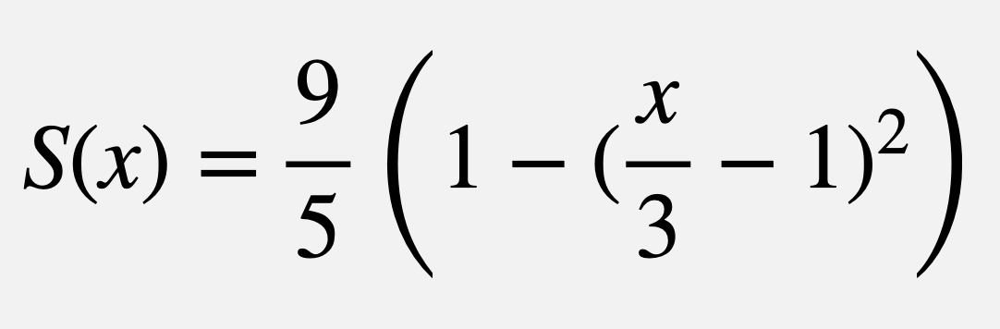

Images of the Russian Empire
Colorizing the Prokudin-Gorskii photo collection
Unaligned
Initially, when the seperate color channels are haphazardly placed on one another, the color image begins to form but still requires alignment for accuracy.
Method
The basic method of alignment was using sum of square differences (SSD). The drawbacks of this method are that it only compares two images at a time and that it can be somewhat inaccurate since the different filters yield different B&W values. However, the method proved to work perfectly well. Since I could only compare two images at a time, I used the green plate as an "anchor" by which the blue and red channels translated around. I also took only the middle fifth of the image when processing its alignment to avoid comparison interference from the edges.
Offsets
| Image Name |
Red Shift (y,x) |
Blue Shift (y,x) |
| lady |
(61, 4) |
(-55, -8) |
| melons |
(96, 3) |
(-82, -10) |
| harvesters |
(65,-3) |
(-59, -17) |
| monestary |
(6, 1) |
(3, -2) |
| emir |
(57, 17) |
(-48, -24) |
| church |
(33, -8) |
(-25, -4) |
| cathedral |
(7, 1) |
(-5, -2) |
| self_portrait |
(98, 8) |
(-78, -29) |
| three_generations |
(59, -3) |
(-52, -15) |
| icon |
(49, 5) |
(-41, -17) |
| sculpture |
(107, -16) |
(-33, 11) |
| train |
(43, 26) |
(-42, -6) |
| onion_church |
(57, 10) |
(-51, -27)
|
| tobolsk |
(4, 1) |
(-3, -3) |
Method
The most difficult challenge for me was removing the borders from the image in a relatively smart way. I figured that since the borders are mostly solid there is a large change in average color between the border and the image. So I plotted out the derivative of the colors of the image going width-wise and height-wise. Then the program finds the largest differences and estimates the border cutoff from there. I only tested the 1/8 of the image closest to the border to find edges.
Shortcomings
Some images, such as "Sculpture", contain a large section that is suddenly cutoff that is part of the image using this method. The reason for this error is because within the image there can be an edge within the image that causes a large derivitive in the RGB color channels that is not a border. An example of this effect occurs in "Sculpture" where the ground is almost entirely removed. Additionally, since the left side turned from white gradually there is some remnants of the border.
I considered other heuristics like taking the HSV seperation and performing a squared difference, however that method performed worse than the first method
Method
I chose to white balance after cropping to avoid interference from the borders. Since the images already looked pretty good, my method was to simply take the brightest point in the image, find the factors that made that point "true" white in RGB, then scaled and clipped the values in the rest of the image. This only offered a subtle difference as expected.
Method
I split the image into its HSV channels then applied a linear scaling to stretch the values form 0 to 1. Then I applied a non-linear transformation C(x) designed to further increase contrast without saturating the values.

Method
I once again split the image into its HSV channels, this time applying a linear scaling to stretch the saturations form 0 to 1 and then then applying a non-linear transformation S(x) designed to increase saturation the more saturated the pixel already is.

Contrast Equalization Gallery
I initially implemented contrast equalization for "fixing" the contrast of images but wasn't satisfied by the result. Instead, I saw it as an opportunity to equalize all the HSV channels. Here are the results! They are quite colorful. :3
Riley Peterlinz - CS 194 - proj1